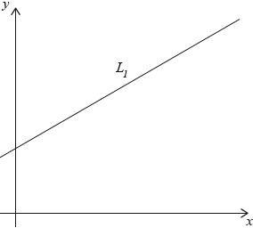
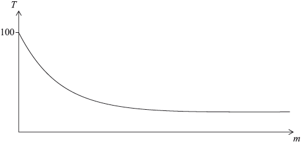

SL Paper 2
A function \(f\) is given by \(f(x) = (2x + 2)(5 - {x^2})\).
The graph of the function \(g(x) = {5^x} + 6x - 6\) intersects the graph of \(f\).
Find the exact value of each of the zeros of \(f\).
Expand the expression for \(f(x)\).
Find \(f’(x)\).
Use your answer to part (b)(ii) to find the values of \(x\) for which \(f\) is increasing.
Draw the graph of \(f\) for \( - 3 \leqslant x \leqslant 3\) and \( - 40 \leqslant y \leqslant 20\). Use a scale of 2 cm to represent 1 unit on the \(x\)-axis and 1 cm to represent 5 units on the \(y\)-axis.
Write down the coordinates of the point of intersection.
The front view of the edge of a water tank is drawn on a set of axes shown below.
The edge is modelled by \(y = a{x^2} + c\).

Point \({\text{P}}\) has coordinates \((-3, 1.8)\), point \({\text{O}}\) has coordinates \((0, 0)\) and point \({\text{Q}}\) has coordinates \((3, 1.8)\).
Write down the value of \(c\).
Find the value of \(a\).
Hence write down the equation of the quadratic function which models the edge of the water tank.
The water tank is shown below. It is partially filled with water.

Calculate the value of y when \(x = 2.4{\text{ m}}\).
The water tank is shown below. It is partially filled with water.

State what the value of \(x\) and the value of \(y\) represent for this water tank.
The water tank is shown below. It is partially filled with water.

Find the value of \(x\) when the height of water in the tank is \(0.9\) m.
The water tank is shown below. It is partially filled with water.

The water tank has a length of 5 m.
When the water tank is filled to a height of \(0.9\) m, the front cross-sectional area of the water is \({\text{2.55 }}{{\text{m}}^2}\).
(i) Calculate the volume of water in the tank.
The total volume of the tank is \({\text{36 }}{{\text{m}}^3}\).
(ii) Calculate the percentage of water in the tank.
A function is defined by \(f(x) = \frac{5}{{{x^2}}} + 3x + c,{\text{ }}x \ne 0,{\text{ }}c \in \mathbb{Z}\).
Write down an expression for \(f ′(x)\).
Consider the graph of f. The graph of f passes through the point P(1, 4).
Find the value of c.
There is a local minimum at the point Q.
Find the coordinates of Q.
There is a local minimum at the point Q.
Find the set of values of x for which the function is decreasing.
Let T be the tangent to the graph of f at P.
Show that the gradient of T is –7.
Let T be the tangent to the graph of f at P.
Find the equation of T.
T intersects the graph again at R. Use your graphic display calculator to find the coordinates of R.
Sketch the graph of y = 2x for \( - 2 \leqslant x \leqslant 3\). Indicate clearly where the curve intersects the y-axis.
Write down the equation of the asymptote of the graph of y = 2x.
On the same axes sketch the graph of y = 3 + 2x − x2. Indicate clearly where this curve intersects the x and y axes.
Using your graphic display calculator, solve the equation 3 + 2x − x2 = 2x.
Write down the maximum value of the function f (x) = 3 + 2x − x2.
Use Differential Calculus to verify that your answer to (e) is correct.
The curve y = px2 + qx − 4 passes through the point (2, –10).
Use the above information to write down an equation in p and q.
The gradient of the curve \(y = p{x^2} + qx - 4\) at the point (2, –10) is 1.
Find \(\frac{{{\text{d}}y}}{{{\text{d}}x}}\).
The gradient of the curve \(y = p{x^2} + qx - 4\) at the point (2, –10) is 1.
Hence, find a second equation in p and q.
The gradient of the curve \(y = p{x^2} + qx - 4\) at the point (2, –10) is 1.
Solve the equations to find the value of p and of q.
Consider the function \(f(x) = {x^3} + \frac{{48}}{x}{\text{, }}x \ne 0\).
Calculate \(f(2)\) .
Sketch the graph of the function \(y = f(x)\) for \( - 5 \leqslant x \leqslant 5\) and \( - 200 \leqslant y \leqslant 200\) .
Find \(f'(x)\) .
Find \(f'(2)\) .
Write down the coordinates of the local maximum point on the graph of \(f\) .
Find the gradient of the tangent to the graph of \(f\) at \(x = 1\).
There is a second point on the graph of \(f\) at which the tangent is parallel to the tangent at \(x = 1\).
Find the \(x\)-coordinate of this point.
The diagram shows a sketch of the function f (x) = 4x3 − 9x2 − 12x + 3.
![]()
Write down the values of x where the graph of f (x) intersects the x-axis.
Write down f ′(x).
Find the value of the local maximum of y = f (x).
Let P be the point where the graph of f (x) intersects the y axis.
Write down the coordinates of P.
Let P be the point where the graph of f (x) intersects the y axis.
Find the gradient of the curve at P.
The line, L, is the tangent to the graph of f (x) at P.
Find the equation of L in the form y = mx + c.
There is a second point, Q, on the curve at which the tangent to f (x) is parallel to L.
Write down the gradient of the tangent at Q.
There is a second point, Q, on the curve at which the tangent to f (x) is parallel to L.
Calculate the x-coordinate of Q.
When Geraldine travels to work she can travel either by car (C), bus (B) or train (T). She travels by car on one day in five. She uses the bus 50 % of the time. The probabilities of her being late (L) when travelling by car, bus or train are 0.05, 0.12 and 0.08 respectively.
It is not necessary to use graph paper for this question.
Copy the tree diagram below and fill in all the probabilities, where NL represents not late, to represent this information.
![]()
Find the probability that Geraldine travels by bus and is late.
Find the probability that Geraldine is late.
Find the probability that Geraldine travelled by train, given that she is late.
Sketch the curve of the function \(f (x) = x^3 − 2x^2 + x − 3\) for values of \(x\) from −2 to 4, giving the intercepts with both axes.
On the same diagram, sketch the line \(y = 7 − 2x\) and find the coordinates of the point of intersection of the line with the curve.
Find the value of the gradient of the curve where \(x = 1.7\) .
The following graph shows the temperature in degrees Celsius of Robert’s cup of coffee, \(t\) minutes after pouring it out. The equation of the cooling graph is \(f (t) = 16 + 74 \times 2.8^{−0.2t}\) where \(f (t)\) is the temperature and \(t\) is the time in minutes after pouring the coffee out.
![]()
Robert, who lives in the UK, travels to Belgium. The exchange rate is 1.37 euros to one British Pound (GBP) with a commission of 3 GBP, which is subtracted before the exchange takes place. Robert gives the bank 120 GBP.
Find the initial temperature of the coffee.
Write down the equation of the horizontal asymptote.
Find the room temperature.
Find the temperature of the coffee after 10 minutes.
Find the temperature of Robert’s coffee after being heated in the microwave for 30 seconds after it has reached the temperature in part (d).
Calculate the length of time it would take a similar cup of coffee, initially at 20°C, to be heated in the microwave to reach 100°C.
Calculate correct to 2 decimal places the amount of euros he receives.
He buys 1 kilogram of Belgian chocolates at 1.35 euros per 100 g.
Calculate the cost of his chocolates in GBP correct to 2 decimal places.
Consider the function \(f:x \mapsto \frac{{kx}}{{{2^x}}}\).
The cost per person, in euros, when \(x\) people are invited to a party can be determined by the function
\(C(x) = x + \frac{{100}}{x}\)
Given that \(f(1) = 2\), show that \(k = 4\).
Write down the values of \(q\) and \(r\) for the following table.
![]()
As \(x\) increases from \( - 1\), the graph of \(y = f(x)\) reaches a maximum value and then decreases, behaving asymptotically.
Draw the graph of \(y = f(x)\) for \( - 1 \leqslant x \leqslant 8\). Use a scale of \({\text{1 cm}}\) to represent 1 unit on both axes. The position of the maximum, \({\text{M}}\), the \(y\)-intercept and the asymptotic behaviour should be clearly shown.
Using your graphic display calculator, find the coordinates of \({\text{M}}\), the maximum point on the graph of \(y = f(x)\).
Write down the equation of the horizontal asymptote to the graph of \(y = f(x)\).
(i) Draw and label the line \( y = 1\) on your graph.
(ii) The equation \(f(x) = 1\) has two solutions. One of the solutions is \(x = 4\). Use your graph to find the other solution.
Find \(C'(x)\).
Show that the cost per person is a minimum when \(10\) people are invited to the party.
Calculate the minimum cost per person.
Consider the curve y = 2x3 − 9x2 + 12x + 2, for −1 < x < 3
Sketch the curve for −1 < x < 3 and −2 < y < 12.
A teacher asks her students to make some observations about the curve.
Three students responded.
Nadia said “The x-intercept of the curve is between −1 and zero”.
Rick said “The curve is decreasing when x < 1 ”.
Paula said “The gradient of the curve is less than zero between x = 1 and x = 2 ”.
State the name of the student who made an incorrect observation.
Find the value of y when x = 1 .
Find \(\frac{{{\text{dy}}}}{{{\text{dx}}}}\).
Show that the stationary points of the curve are at x = 1 and x = 2.
Given that y = 2x3 − 9x2 + 12x + 2 = k has three solutions, find the possible values of k.
On Monday Paco goes to a running track to train. He runs the first lap of the track in 120 seconds. Each lap Paco runs takes him 10 seconds longer than his previous lap.
Find the time, in seconds, Paco takes to run his fifth lap.
Paco runs his last lap in 260 seconds.
Find how many laps he has run on Monday.
Find the total time, in minutes, run by Paco on Monday.
On Wednesday Paco takes Lola to train. They both run the first lap of the track in 120 seconds. Each lap Lola runs takes 1.06 times as long as her previous lap.
Find the time, in seconds, Lola takes to run her third lap.
Find the total time, in seconds, Lola takes to run her first four laps.
Each lap Paco runs again takes him 10 seconds longer than his previous lap. After a certain number of laps Paco takes less time per lap than Lola.
Find the number of the lap when this happens.
Consider the function \(f(x) = - {x^4} + a{x^2} + 5\), where \(a\) is a constant. Part of the graph of \(y = f(x)\) is shown below.

It is known that at the point where \(x = 2\) the tangent to the graph of \(y = f(x)\) is horizontal.
There are two other points on the graph of \(y = f(x)\) at which the tangent is horizontal.
Write down the \(y\)-intercept of the graph.
Find \(f'(x)\).
Show that \(a = 8\).
Find \(f(2)\).
Write down the \(x\)-coordinates of these two points;
Write down the intervals where the gradient of the graph of \(y = f(x)\) is positive.
Write down the range of \(f(x)\).
Write down the number of possible solutions to the equation \(f(x) = 5\).
The equation \(f(x) = m\), where \(m \in \mathbb{R}\), has four solutions. Find the possible values of \(m\).
A water container is made in the shape of a cylinder with internal height \(h\) cm and internal base radius \(r\) cm.

The water container has no top. The inner surfaces of the container are to be coated with a water-resistant material.
The volume of the water container is \(0.5{\text{ }}{{\text{m}}^3}\).
The water container is designed so that the area to be coated is minimized.
One can of water-resistant material coats a surface area of \(2000{\text{ c}}{{\text{m}}^2}\).
Write down a formula for \(A\), the surface area to be coated.
Express this volume in \({\text{c}}{{\text{m}}^3}\).
Write down, in terms of \(r\) and \(h\), an equation for the volume of this water container.
Show that \(A = \pi {r^2}\frac{{1\,000\,000}}{r}\).
Show that \(A = \pi {r^2} + \frac{{1\,000\,000}}{r}\).
Find \(\frac{{{\text{d}}A}}{{{\text{d}}r}}\).
Using your answer to part (e), find the value of \(r\) which minimizes \(A\).
Find the value of this minimum area.
Find the least number of cans of water-resistant material that will coat the area in part (g).
Consider the sequence \({u_1},{\text{ }}{u_2},{\text{ }}{u_3},{\text{ }} \ldots ,{\text{ }}{{\text{u}}_n},{\text{ }} \ldots \) where
\[{u_1} = 600,{\text{ }}{u_2} = 617,{\text{ }}{u_3} = 634,{\text{ }}{u_4} = 651.\]
The sequence continues in the same manner.
Find the value of \({u_{20}}\).
Find the sum of the first 10 terms of the sequence.
Now consider the sequence \({v_1},{\text{ }}{v_2},{\text{ }}{v_3},{\text{ }} \ldots ,{\text{ }}{v_n},{\text{ }} \ldots \) where
\[{v_1} = 3,{\text{ }}{v_2} = 6,{\text{ }}{v_3} = 12,{\text{ }}{v_4} = 24\]
This sequence continues in the same manner.
Find the exact value of \({v_{10}}\).
Now consider the sequence \({v_1},{\text{ }}{v_2},{\text{ }}{v_3},{\text{ }} \ldots ,{\text{ }}{v_n},{\text{ }} \ldots \) where
\[{v_1} = 3,{\text{ }}{v_2} = 6,{\text{ }}{v_3} = 12,{\text{ }}{v_4} = 24\]
This sequence continues in the same manner.
Find the sum of the first 8 terms of this sequence.
\(k\) is the smallest value of \(n\) for which \({v_n}\) is greater than \({u_n}\).
Calculate the value of \(k\).
In the month before their IB Diploma examinations, eight male students recorded the number of hours they spent on social media.
For each student, the number of hours spent on social media (\(x\)) and the number of IB Diploma points obtained (\(y\)) are shown in the following table.
Use your graphic display calculator to find
Ten female students also recorded the number of hours they spent on social media in the month before their IB Diploma examinations. Each of these female students spent between 3 and 30 hours on social media.
The equation of the regression line y on x for these ten female students is
\[y = - \frac{2}{3}x + \frac{{125}}{3}.\]
An eleventh girl spent 34 hours on social media in the month before her IB Diploma examinations.
On graph paper, draw a scatter diagram for these data. Use a scale of 2 cm to represent 5 hours on the \(x\)-axis and 2 cm to represent 10 points on the \(y\)-axis.
(i) \({\bar x}\), the mean number of hours spent on social media;
(ii) \({\bar y}\), the mean number of IB Diploma points.
Plot the point \((\bar x,{\text{ }}\bar y)\) on your scatter diagram and label this point M.
Write down the value of \(r\), the Pearson’s product–moment correlation coefficient, for these data.
Write down the equation of the regression line \(y\) on \(x\) for these eight male students.
Draw the regression line, from part (e), on your scatter diagram.
Use the given equation of the regression line to estimate the number of IB Diploma points that this girl obtained.
Write down a reason why this estimate is not reliable.
Consider the function \(f(x) = \frac{3}{4}{x^4} - {x^3} - 9{x^2} + 20\).
Find \(f( - 2)\).
Find \(f'(x)\).
The graph of the function \(f(x)\) has a local minimum at the point where \(x = - 2\).
Using your answer to part (b), show that there is a second local minimum at \(x = 3\).
The graph of the function \(f(x)\) has a local minimum at the point where \(x = - 2\).
Sketch the graph of the function \(f(x)\) for \( - 5 \leqslant x \leqslant 5\) and \( - 40 \leqslant y \leqslant 50\). Indicate on your
sketch the coordinates of the \(y\)-intercept.
The graph of the function \(f(x)\) has a local minimum at the point where \(x = - 2\).
Write down the coordinates of the local maximum.
Let \(T\) be the tangent to the graph of the function \(f(x)\) at the point \((2, –12)\).
Find the gradient of \(T\).
The line \(L\) passes through the point \((2, −12)\) and is perpendicular to \(T\).
\(L\) has equation \(x + by + c = 0\), where \(b\) and \(c \in \mathbb{Z}\).
Find
(i) the gradient of \(L\);
(ii) the value of \(b\) and the value of \(c\).
Consider the function \(f(x) = \frac{{96}}{{{x^2}}} + kx\), where \(k\) is a constant and \(x \ne 0\).
Write down \(f'(x)\).
The graph of \(y = f(x)\) has a local minimum point at \(x = 4\).
Show that \(k = 3\).
The graph of \(y = f(x)\) has a local minimum point at \(x = 4\).
Find \(f(2)\).
The graph of \(y = f(x)\) has a local minimum point at \(x = 4\).
Find \(f'(2)\)
The graph of \(y = f(x)\) has a local minimum point at \(x = 4\).
Find the equation of the normal to the graph of \(y = f(x)\) at the point where \(x = 2\).
Give your answer in the form \(ax + by + d = 0\) where \(a,{\text{ }}b,{\text{ }}d \in \mathbb{Z}\).
The graph of \(y = f(x)\) has a local minimum point at \(x = 4\).
Sketch the graph of \(y = f(x)\), for \( - 5 \leqslant x \leqslant 10\) and \( - 10 \leqslant y \leqslant 100\).
The graph of \(y = f(x)\) has a local minimum point at \(x = 4\).
Write down the coordinates of the point where the graph of \(y = f(x)\) intersects the \(x\)-axis.
The graph of \(y = f(x)\) has a local minimum point at \(x = 4\).
State the values of \(x\) for which \(f(x)\) is decreasing.
Violeta plans to grow flowers in a rectangular plot. She places a fence to mark out the perimeter of the plot and uses 200 metres of fence. The length of the plot is \(x\) metres.

Violeta places the fence so that the area of the plot is maximized.
By selling her flowers, Violeta earns 2 Bulgarian Levs (BGN) per square metre of the plot.
Violeta wants to invest her 5000 BGN.
A bank offers a nominal annual interest rate of 4%, compounded half-yearly.
Another bank offers an interest rate of \(r\)% compounded annually, that would allow her to double her money in 12 years.
Show that the width of the plot, in metres, is given by \(100 - x\).
Write down the area of the plot in terms of \(x\).
Find the value of \(x\) that maximizes the area of the plot.
Show that Violeta earns 5000 BGN from selling the flowers grown on the plot.
Find the amount of money that Violeta would have after 6 years. Give your answer correct to two decimal places.
Find how long it would take for the interest earned to be 2000 BGN.
Find the lowest possible value for \(r\).
Consider the function \(f(x) = 0.3{x^3} + \frac{{10}}{x} + {2^{ - x}}\).
Consider a second function, \(g(x) = 2x - 3\).
Calculate \(f(1)\).
Sketch the graph of \(y = f(x)\) for \( - 7 \leqslant x \leqslant 4\) and \( - 30 \leqslant y \leqslant 30\).
Write down the equation of the vertical asymptote.
Write down the coordinates of the \(x\)-intercept.
Write down the possible values of \(x\) for which \(x < 0\) and \(f’(x) > 0\).
Find the solution of \(f(x) = g(x)\).
Consider the functions \(f(x) = \frac{{2x + 3}}{{x + 4}}\) and \(g(x) = x + 0.5\) .
Sketch the graph of the function \(f(x)\), for \( - 10 \leqslant x \leqslant 10\) . Indicating clearly the axis intercepts and any asymptotes.
Write down the equation of the vertical asymptote.
On the same diagram as part (a) sketch the graph of \(g(x) = x + 0.5\) .
Using your graphical display calculator write down the coordinates of one of the points of intersection on the graphs of \(f\) and \(g\), giving your answer correct to five decimal places.
Write down the gradient of the line \(g(x) = x + 0.5\) .
The line \(L\) passes through the point with coordinates \(( - 2{\text{, }} - 3)\) and is perpendicular to the line \(g(x)\) . Find the equation of \(L\).
Consider the function \(g(x) = {x^3} + k{x^2} - 15x + 5\).
The tangent to the graph of \(y = g(x)\) at \(x = 2\) is parallel to the line \(y = 21x + 7\).
Find \(g'(x)\).
Show that \(k = 6\).
Find the equation of the tangent to the graph of \(y = g(x)\) at \(x = 2\). Give your answer in the form \(y = mx + c\).
Use your answer to part (a) and the value of \(k\), to find the \(x\)-coordinates of the stationary points of the graph of \(y = g(x)\).
Find \(g’( - 1)\).
Hence justify that \(g\) is decreasing at \(x = - 1\).
Find the \(y\)-coordinate of the local minimum.
The line \({L_1}\) has equation \(2y - x - 7 = 0\) and is shown on the diagram.

The point A has coordinates \((1,{\text{ }}4)\).
The point C has coordinates \((5,{\text{ }}12)\). M is the midpoint of AC.
The straight line, \({L_2}\), is perpendicular to AC and passes through M.
The point D is the intersection of \({L_1}\) and \({L_2}\).
The length of MD is \(\frac{{\sqrt {45} }}{2}\).
The point B is such that ABCD is a rhombus.
Show that A lies on \({L_1}\).
Find the coordinates of M.
Find the length of AC.
Show that the equation of \({L_2}\) is \(2y + x - 19 = 0\).
Find the coordinates of D.
Write down the length of MD correct to five significant figures.
Find the area of ABCD.
The function \(f(x)\) is defined by \(f(x) = 1.5x + 4 + \frac{6}{x}{\text{, }}x \ne 0\) .
Write down the equation of the vertical asymptote.
Find \(f'(x)\) .
Find the gradient of the graph of the function at \(x = - 1\).
Using your answer to part (c), decide whether the function \(f(x)\) is increasing or decreasing at \(x = - 1\). Justify your answer.
Sketch the graph of \(f(x)\) for \( - 10 \leqslant x \leqslant 10\) and \( - 20 \leqslant y \leqslant 20\) .
\({{\text{P}}_1}\) is the local maximum point and \({{\text{P}}_2}\) is the local minimum point on the graph of \(f(x)\) .
Using your graphic display calculator, write down the coordinates of
(i) \({{\text{P}}_1}\) ;
(ii) \({{\text{P}}_2}\) .
Using your sketch from (e), determine the range of the function \(f(x)\) for \( - 10 \leqslant x \leqslant 10\) .
A pan, in which to cook a pizza, is in the shape of a cylinder. The pan has a diameter of 35 cm and a height of 0.5 cm.

A chef had enough pizza dough to exactly fill the pan. The dough was in the shape of a sphere.
The pizza was cooked in a hot oven. Once taken out of the oven, the pizza was placed in a dining room.
The temperature, \(P\), of the pizza, in degrees Celsius, °C, can be modelled by
\[P(t) = a{(2.06)^{ - t}} + 19,{\text{ }}t \geqslant 0\]
where \(a\) is a constant and \(t\) is the time, in minutes, since the pizza was taken out of the oven.
When the pizza was taken out of the oven its temperature was 230 °C.
The pizza can be eaten once its temperature drops to 45 °C.
Calculate the volume of this pan.
Find the radius of the sphere in cm, correct to one decimal place.
Find the value of \(a\).
Find the temperature that the pizza will be 5 minutes after it is taken out of the oven.
Calculate, to the nearest second, the time since the pizza was taken out of the oven until it can be eaten.
In the context of this model, state what the value of 19 represents.
The following table shows the number of bicycles, \(x\), produced daily by a factory and their total production cost, \(y\), in US dollars (USD). The table shows data recorded over seven days.

(i) Write down the Pearson’s product–moment correlation coefficient, \(r\), for these data.
(ii) Hence comment on the result.
Write down the equation of the regression line \(y\) on \(x\) for these data, in the form \(y = ax + b\).
Estimate the total cost, to the nearest USD, of producing \(13\) bicycles on a particular day.
All the bicycles that are produced are sold. The bicycles are sold for 304 USD each.
Explain why the factory does not make a profit when producing \(13\) bicycles on a particular day.
All the bicycles that are produced are sold. The bicycles are sold for 304 USD each.
(i) Write down an expression for the total selling price of \(x\) bicycles.
(ii) Write down an expression for the profit the factory makes when producing \(x\) bicycles on a particular day.
(iii) Find the least number of bicycles that the factory should produce, on a particular day, in order to make a profit.
The diagram below shows the graph of a line \(L\) passing through (1, 1) and (2 , 3) and the graph \(P\) of the function \(f (x) = x^2 − 3x − 4\)
![]()
Find the gradient of the line L.
Differentiate \(f (x)\) .
Find the coordinates of the point where the tangent to P is parallel to the line L.
Find the coordinates of the point where the tangent to P is perpendicular to the line L.
Find
(i) the gradient of the tangent to P at the point with coordinates (2, − 6).
(ii) the equation of the tangent to P at this point.
State the equation of the axis of symmetry of P.
Find the coordinates of the vertex of P and state the gradient of the curve at this point.
The diagram shows an aerial view of a bicycle track. The track can be modelled by the quadratic function
\(y = \frac{{ - {x^2}}}{{10}} + \frac{{27}}{2}x\), where \(x \geqslant 0,{\text{ }}y \geqslant 0\)
(x , y) are the coordinates of a point x metres east and y metres north of O , where O is the origin (0, 0) . B is a point on the bicycle track with coordinates (100, 350) .
![]()
The coordinates of point A are (75, 450). Determine whether point A is on the bicycle track. Give a reason for your answer.
Find the derivative of \(y = \frac{{ - {x^2}}}{{10}} + \frac{{27}}{2}x\).
Use the answer in part (b) to determine if A (75, 450) is the point furthest north on the track between O and B. Give a reason for your answer.
(i) Write down the midpoint of the line segment OB.
(ii) Find the gradient of the line segment OB.
Scott starts from a point C(0,150) . He hikes along a straight road towards the bicycle track, parallel to the line segment OB.
Find the equation of Scott’s road. Express your answer in the form \(ax + by = c\), where \(a, b {\text{ and }} c \in \mathbb{R}\).
Use your graphic display calculator to find the coordinates of the point where Scott first crosses the bicycle track.
Give all answers in this question to the nearest whole currency unit.
Ying and Ruby each have 5000 USD to invest.
Ying invests his 5000 USD in a bank account that pays a nominal annual interest rate of 4.2 % compounded yearly. Ruby invests her 5000 USD in an account that offers a fixed interest of 230 USD each year.
Find the amount of money that Ruby will have in the bank after 3 years.
Show that Ying will have 7545 USD in the bank at the end of 10 years.
Find the number of complete years it will take for Ying’s investment to first exceed 6500 USD.
Find the number of complete years it will take for Ying’s investment to exceed Ruby’s investment.
Ruby moves from the USA to Italy. She transfers 6610 USD into an Italian bank which has an exchange rate of 1 USD = 0.735 Euros. The bank charges 1.8 % commission.
Calculate the amount of money Ruby will invest in the Italian bank after commission.
Ruby returns to the USA for a short holiday. She converts 800 Euros at a bank in Chicago and receives 1006.20 USD. The bank advertises an exchange rate of 1 Euro = 1.29 USD.
Calculate the percentage commission Ruby is charged by the bank.
Daniel wants to invest \(\$ 25\,000\) for a total of three years. There are two investment options.
Option One pays compound interest at a nominal annual rate of interest of 5 %, compounded annually.
Option Two pays compound interest at a nominal annual rate of interest of 4.8 %, compounded monthly.
An arithmetic sequence is defined as
un = 135 + 7n, n = 1, 2, 3, …
Calculate the value of his investment at the end of the third year for each investment option, correct to two decimal places.
Determine Daniel’s best investment option.
Calculate u1, the first term in the sequence.
Show that the common difference is 7.
Sn is the sum of the first n terms of the sequence.
Find an expression for Sn. Give your answer in the form Sn = An2 + Bn, where A and B are constants.
The first term, v1, of a geometric sequence is 20 and its fourth term v4 is 67.5.
Show that the common ratio, r, of the geometric sequence is 1.5.
Tn is the sum of the first n terms of the geometric sequence.
Calculate T7, the sum of the first seven terms of the geometric sequence.
Tn is the sum of the first n terms of the geometric sequence.
Use your graphic display calculator to find the smallest value of n for which Tn > Sn.
A cup of boiling water is placed in a room to cool. The temperature of the room is 20°C . This situation can be modelled by the exponential function \(T = a + b({k^{ - m}})\), where \(T\) is the temperature of the water, in °C , and \(m\) is the number of minutes for which the cup has been placed in the room. A sketch of the situation is given as follows.

Explain why \(a = 20\).
Initially, at \(m = 0\), the temperature of the water is 100°C.
Find the value of \(b\).
After being placed in the room for one minute, the temperature of the water is 84°C.
Show that \(k = 1.25\).
After being placed in the room for one minute, the temperature of the water is 84°C.
Find the temperature of the water three minutes after it has been placed in the room.
After being placed in the room for one minute, the temperature of the water is 84°C.
Find the total time needed for the water to reach a temperature of 35°C. Give your answer in minutes and seconds, correct to the nearest second.
Antonio and Barbara start work at the same company on the same day. They each earn an annual salary of \(8000\) euros during the first year of employment. The company gives them a salary increase following the completion of each year of employment. Antonio is paid using plan A and Barbara is paid using plan B.
Plan A: The annual salary increases by \(450\) euros each year.
Plan B: The annual salary increases by \(5\,\% \) each year.
Calculate
i) Antonio’s annual salary during his second year of employment;
ii) Barbara’s annual salary during her second year of employment.
Write down an expression for
i) Antonio’s annual salary during his \(n\) th year of employment;
ii) Barbara’s annual salary during her \(n\) th year of employment.
Determine the number of years for which Antonio’s annual salary is greater than or equal to Barbara’s annual salary.
Both Antonio and Barbara plan to work at the company for a total of \(15\) years.
i) Calculate the total amount that Barbara will be paid during these \(15\) years.
ii) Determine whether Antonio earns more than Barbara during these \(15\) years.
Given \(f (x) = x^2 − 3x^{−1}, x \in {\mathbb{R}}, - 5 \leqslant x \leqslant 5, x \ne 0\),
A football is kicked from a point A (a, 0), 0 < a < 10 on the ground towards a goal to the right of A.
The ball follows a path that can be modelled by part of the graph
\(y = − 0.021x^2 + 1.245x − 6.01, x \in {\mathbb{R}}, y \geqslant 0\).
x is the horizontal distance of the ball from the origin
y is the height above the ground
Both x and y are measured in metres.
Write down the equation of the vertical asymptote.
Find \(f ′(x)\).
Using your graphic display calculator or otherwise, write down the coordinates of any point where the graph of \(y = f (x)\) has zero gradient.
Write down all intervals in the given domain for which \(f (x)\) is increasing.
Using your graphic display calculator or otherwise, find the value of a.
Find \(\frac{{dy}}{{dx}}\).
(i) Use your answer to part (b) to calculate the horizontal distance the ball has travelled from A when its height is a maximum.
(ii) Find the maximum vertical height reached by the football.
Draw a graph showing the path of the football from the point where it is kicked to the point where it hits the ground again. Use 1 cm to represent 5 m on the horizontal axis and 1 cm to represent 2 m on the vertical scale.
The goal posts are 35 m from the point where the ball is kicked.
At what height does the ball pass over the goal posts?
The graph of the function \(f(x) = \frac{{14}}{x} + x - 6\), for 1 ≤ x ≤ 7 is given below.
![]()
Calculate \(f (1)\).
Find \(f ′(x)\).
Use your answer to part (b) to show that the x-coordinate of the local minimum point of the graph of \(f\) is 3.7 correct to 2 significant figures.
Find the range of \(f\).
Points A and B lie on the graph of \(f\). The x-coordinates of A and B are 1 and 7 respectively.
Write down the y-coordinate of B.
Points A and B lie on the graph of f . The x-coordinates of A and B are 1 and 7 respectively.
Find the gradient of the straight line passing through A and B.
M is the midpoint of the line segment AB.
Write down the coordinates of M.
L is the tangent to the graph of the function \(y = f (x)\), at the point on the graph with the same x-coordinate as M.
Find the gradient of L.
Find the equation of L. Give your answer in the form \(y = mx + c\).
Consider the function \(f(x) = 0.5{x^2} - \frac{8}{x},{\text{ }}x \ne 0\).
Find \(f( - 2)\).
Find \(f'(x)\).
Find the gradient of the graph of \(f\) at \(x = - 2\).
Let \(T\) be the tangent to the graph of \(f\) at \(x = - 2\).
Write down the equation of \(T\).
Let \(T\) be the tangent to the graph of \(f\) at \(x = - 2\).
Sketch the graph of \(f\) for \( - 5 \leqslant x \leqslant 5\) and \( - 20 \leqslant y \leqslant 20\).
Let \(T\) be the tangent to the graph of \(f\) at \(x = - 2\).
Draw \(T\) on your sketch.
The tangent, \(T\), intersects the graph of \(f\) at a second point, P.
Use your graphic display calculator to find the coordinates of P.
A closed rectangular box has a height \(y{\text{ cm}}\) and width \(x{\text{ cm}}\). Its length is twice its width. It has a fixed outer surface area of \(300{\text{ c}}{{\text{m}}^2}\) .
![]()
Factorise \(3{x^2} + 13x - 10\).
Solve the equation \(3{x^2} + 13x - 10 = 0\).
Consider a function \(f(x) = 3{x^2} + 13x - 10\) .
Find the equation of the axis of symmetry on the graph of this function.
Consider a function \(f(x) = 3{x^2} + 13x - 10\) .
Calculate the minimum value of this function.
Show that \(4{x^2} + 6xy = 300\).
Find an expression for \(y\) in terms of \(x\).
Hence show that the volume \(V\) of the box is given by \(V = 100x - \frac{4}{3}{x^3}\).
Find \(\frac{{{\text{d}}V}}{{{\text{d}}x}}\).
(i) Hence find the value of \(x\) and of \(y\) required to make the volume of the box a maximum.
(ii) Calculate the maximum volume.
Throughout this question all the numerical answers must be given correct to the nearest whole number.
Park School started in January 2000 with \(100\) students. Every full year, there is an increase of \(6\% \) in the number of students.
Find the number of students attending Park School in
(i) January 2001;
(ii) January 2003.
Park School started in January 2000 with \(100\) students. Every full year, there is an increase of \(6\% \) in the number of students.
Show that the number of students attending Park School in January 2007 is \(150\).
Grove School had \(110\) students in January 2000. Every full year, the number of students is \(10\) more than in the previous year.
Find the number of students attending Grove School in January 2003.
Grove School had \(110\) students in January 2000. Every full year, the number of students is \(10\) more than in the previous year.
Find the year in which the number of students attending Grove School will be first \(60\% \) more than in January 2000.
Each January, one of these two schools, the one that has more students, is given extra money to spend on sports equipment.
(i) Decide which school gets the money in 2007. Justify your answer.
(ii) Find the first year in which Park School will be given this extra money.
A parcel is in the shape of a rectangular prism, as shown in the diagram. It has a length \(l\) cm, width \(w\) cm and height of \(20\) cm.
The total volume of the parcel is \(3000{\text{ c}}{{\text{m}}^3}\).
Express the volume of the parcel in terms of \(l\) and \(w\).
Show that \(l = \frac{{150}}{w}\).
The parcel is tied up using a length of string that fits exactly around the parcel, as shown in the following diagram.

Show that the length of string, \(S\) cm, required to tie up the parcel can be written as
\[S = 40 + 4w + \frac{{300}}{w},{\text{ }}0 < w \leqslant 20.\]
The parcel is tied up using a length of string that fits exactly around the parcel, as shown in the following diagram.

Draw the graph of \(S\) for \(0 < w \leqslant 20\) and \(0 < S \leqslant 500\), clearly showing the local minimum point. Use a scale of \(2\) cm to represent \(5\) units on the horizontal axis \(w\) (cm), and a scale of \(2\) cm to represent \(100\) units on the vertical axis \(S\) (cm).
The parcel is tied up using a length of string that fits exactly around the parcel, as shown in the following diagram.

Find \(\frac{{{\text{d}}S}}{{{\text{d}}w}}\).
The parcel is tied up using a length of string that fits exactly around the parcel, as shown in the following diagram.

Find the value of \(w\) for which \(S\) is a minimum.
The parcel is tied up using a length of string that fits exactly around the parcel, as shown in the following diagram.

Write down the value, \(l\), of the parcel for which the length of string is a minimum.
The parcel is tied up using a length of string that fits exactly around the parcel, as shown in the following diagram.

Find the minimum length of string required to tie up the parcel.
Consider the function \(g(x) = bx - 3 + \frac{1}{{{x^2}}},{\text{ }}x \ne 0\).
Write down the equation of the vertical asymptote of the graph of y = g(x) .
Write down g′(x) .
The line T is the tangent to the graph of y = g(x) at the point where x = 1. The gradient of T is 3.
Show that b = 5.
The line T is the tangent to the graph of y = g(x) at the point where x = 1. The gradient of T is 3.
Find the equation of T.
Using your graphic display calculator find the coordinates of the point where the graph of y = g(x) intersects the x-axis.
(i) Sketch the graph of y = g(x) for −2 ≤ x ≤ 5 and −15 ≤ y ≤ 25, indicating clearly your answer to part (e).
(ii) Draw the line T on your sketch.
Using your graphic display calculator find the coordinates of the local minimum point of y = g(x) .
Write down the interval for which g(x) is increasing in the domain 0 < x < 5 .
Consider the function f (x) = x3 – 3x– 24x + 30.
Write down f (0).
Find \(f'(x)\).
Find the gradient of the graph of f (x) at the point where x = 1.
(i) Use f '(x) to find the x-coordinate of M and of N.
(ii) Hence or otherwise write down the coordinates of M and of N.
Sketch the graph of f (x) for \( - 5 \leqslant x \leqslant 7\) and \( - 60 \leqslant y \leqslant 60\). Mark clearly M and N on your graph.
Lines L1 and L2 are parallel, and they are tangents to the graph of f (x) at points A and B respectively. L1 has equation y = 21x + 111.
(i) Find the x-coordinate of A and of B.
(ii) Find the y-coordinate of B.
The diagram shows part of the graph of \(f(x) = {x^2} - 2x + \frac{9}{x}\) , where \(x \ne 0\) .
![]()
Write down
(i) the equation of the vertical asymptote to the graph of \(y = f (x)\) ;
(ii) the solution to the equation \(f (x) = 0\) ;
(iii) the coordinates of the local minimum point.
Find \(f'(x)\) .
Show that \(f'(x)\) can be written as \(f'(x) = \frac{{2{x^3} - 2{x^2} - 9}}{{{x^2}}}\) .
Find the gradient of the tangent to \(y = f (x)\) at the point \({\text{A}}(1{\text{, }}8)\) .
The line, \(L\), passes through the point A and is perpendicular to the tangent at A.
Write down the gradient of \(L\) .
The line, \(L\) , passes through the point A and is perpendicular to the tangent at A.
Find the equation of \(L\) . Give your answer in the form \(y = mx + c\) .
The line, \(L\) , passes through the point A and is perpendicular to the tangent at A.
\(L\) also intersects the graph of \(y = f (x)\) at points B and C . Write down the x-coordinate of B and of C .
Mal is shopping for a school trip. He buys \(50\) tins of beans and \(20\) packets of cereal. The total cost is \(260\) Australian dollars (\({\text{AUD}}\)).
The triangular faces of a square based pyramid, \({\text{ABCDE}}\), are all inclined at \({70^ \circ }\) to the base. The edges of the base \({\text{ABCD}}\) are all \(10{\text{ cm}}\) and \({\text{M}}\) is the centre. \({\text{G}}\) is the mid-point of \({\text{CD}}\).
![]()
Write down an equation showing this information, taking \(b\) to be the cost of one tin of beans and \(c\) to be the cost of one packet of cereal in \({\text{AUD}}\).
Stephen thinks that Mal has not bought enough so he buys \(12\) more tins of beans and \(6\) more packets of cereal. He pays \(66{\text{ AUD}}\).
Write down another equation to represent this information.
Stephen thinks that Mal has not bought enough so he buys \(12\) more tins of beans and \(6\) more packets of cereal. He pays \(66{\text{ AUD}}\).
Find the cost of one tin of beans.
(i) Sketch the graphs of the two equations from parts (a) and (b).
(ii) Write down the coordinates of the point of intersection of the two graphs.
Using the letters on the diagram draw a triangle showing the position of a \({70^ \circ }\) angle.
Show that the height of the pyramid is \(13.7{\text{ cm}}\), to 3 significant figures.
Calculate
(i) the length of \({\text{EG}}\);
(ii) the size of angle \({\text{DEC}}\).
Find the total surface area of the pyramid.
Find the volume of the pyramid.
Consider the curve \(y = {x^3} + \frac{3}{2}{x^2} - 6x - 2\) .
(i) Write down the value of \(y\) when \(x\) is \(2\).
(ii) Write down the coordinates of the point where the curve intercepts the \(y\)-axis.
Sketch the curve for \( - 4 \leqslant x \leqslant 3\) and \( - 10 \leqslant y \leqslant 10\). Indicate clearly the information found in (a).
Find \(\frac{{{\text{d}}y}}{{{\text{d}}x}}\) .
Let \({L_1}\) be the tangent to the curve at \(x = 2\).
Let \({L_2}\) be a tangent to the curve, parallel to \({L_1}\).
(i) Show that the gradient of \({L_1}\) is \(12\).
(ii) Find the \(x\)-coordinate of the point at which \({L_2}\) and the curve meet.
(iii) Sketch and label \({L_1}\) and \({L_2}\) on the diagram drawn in (b).
It is known that \(\frac{{{\text{d}}y}}{{{\text{d}}x}} > 0\) for \(x < - 2\) and \(x > b\) where \(b\) is positive.
(i) Using your graphic display calculator, or otherwise, find the value of \(b\).
(ii) Describe the behaviour of the curve in the interval \( - 2 < x < b\) .
(iii) Write down the equation of the tangent to the curve at \(x = - 2\).
The diagram shows a Ferris wheel that moves with constant speed and completes a rotation every 40 seconds. The wheel has a radius of \(12\) m and its lowest point is \(2\) m above the ground.
![]()
Initially, a seat C is vertically below the centre of the wheel, O. It then rotates in an anticlockwise (counterclockwise) direction.
Write down
(i) the height of O above the ground;
(ii) the maximum height above the ground reached by C .
In a revolution, C reaches points A and B , which are at the same height above the ground as the centre of the wheel. Write down the number of seconds taken for C to first reach A and then B .
The sketch below shows the graph of the function, \(h(t)\) , for the height above ground of C, where \(h\) is measured in metres and \(t\) is the time in seconds, \(0 \leqslant t \leqslant 40\) .
![]()
Copy the sketch and show the results of part (a) and part (b) on your diagram. Label the points clearly with their coordinates.
A manufacturer claims that fertilizer has an effect on the height of rice plants. He measures the height of fertilized and unfertilized plants. The results are given in the following table.
![]()
A chi-squared test is performed to decide if the manufacturer’s claim is justified at the 1 % level of significance.
The population of fleas on a dog after t days, is modelled by
\[N = 4 \times {(2)^{\frac{t}{4}}},{\text{ }}t \geqslant 0\]
Some values of N are shown in the table below.
![]()
Write down the null and alternative hypotheses for this test.
For the number of fertilized plants with height greater than 75 cm, show that the expected value is 97.5.
Write down the value of \(\chi_{calc}^2\).
Write down the number of degrees of freedom.
Is the manufacturer’s claim justified? Give a reason for your answer.
Write down the value of p.
Write down the value of q.
Using the values in the table above, draw the graph of N for 0 ≤ t ≤ 20. Use 1 cm to represent 2 days on the horizontal axis and 1 cm to represent 10 fleas on the vertical axis.
Use your graph to estimate the number of days for the population of fleas to reach 55.
Hugo is given a rectangular piece of thin cardboard, \(16\,{\text{cm}}\) by \(10\,{\text{cm}}\). He decides to design a tray with it.
He removes from each corner the shaded squares of side \(x\,{\text{cm}}\), as shown in the following diagram.
![]()
The remainder of the cardboard is folded up to form the tray as shown in the following diagram.
![]()
Write down, in terms of \(x\) , the length and the width of the tray.
(i) State whether \(x\) can have a value of \(5\). Give a reason for your answer.
(ii) Write down the interval for the possible values of \(x\) .
Show that the volume, \(V\,{\text{c}}{{\text{m}}^3}\), of this tray is given by
\[V = 4{x^3} - 52{x^2} + 160x.\]
Find \(\frac{{dV}}{{dx}}.\)
Using your answer from part (d), find the value of \(x\) that maximizes the volume of the tray.
Calculate the maximum volume of the tray.
Sketch the graph of \(V = 4{x^3} - 51{x^2} + 160x\) , for the possible values of \(x\) found in part (b)(ii), and \(0 \leqslant V \leqslant 200\) . Clearly label the maximum point.
The temperature in \(^ \circ {\text{C}}\) of a pot of water removed from the cooker is given by \(T(m) = 20 + 70 \times {2.72^{ - 0.4m}}\), where \(m\) is the number of minutes after the pot is removed from the cooker.
Show that the temperature of the water when it is removed from the cooker is \({90^ \circ }{\text{C}}\).
The following table shows values for \(m\) and \(T(m)\).
![]()
(i) Write down the value of \(s\).
(ii) Draw the graph of \(T(m)\) for \(0 \leqslant m \leqslant 10\) . Use a scale of \(1{\text{ cm}}\) to represent \(1\) minute on the horizontal axis and a scale of \(1{\text{ cm}}\) to represent \({10^ \circ }{\text{C}}\) on the vertical axis.
(iii) Use your graph to find how long it takes for the temperature to reach \({56^ \circ }{\text{C}}\). Show your method clearly.
(iv) Write down the temperature approached by the water after a long time. Justify your answer.
Consider the function \(S(m) = 20m - 40\) for \(2 \leqslant m \leqslant 6\) .
The function \(S(m)\) represents the temperature of soup in a pot placed on the cooker two minutes after the water has been removed. The soup is then heated.
Draw the graph of \(S(m)\) on the same set of axes used for part (b).
Consider the function \(S(m) = 20m - 40\) for \(2 \leqslant m \leqslant 6\) .
The function \(S(m)\) represents the temperature of soup in a pot placed on the cooker two minutes after the water has been removed. The soup is then heated.
Comment on the meaning of the constant \(20\) in the formula for \(S(m)\) in relation to the temperature of the soup.
Consider the function \(S(m) = 20m - 40\) for \(2 \leqslant m \leqslant 6\) .
The function \(S(m)\) represents the temperature of soup in a pot placed on the cooker two minutes after the water has been removed. The soup is then heated.
(i) Use your graph to solve the equation \(S(m) = T(m)\) . Show your method clearly.
(ii) Hence describe by using inequalities the set of values of \(m\) for which \(S(m) > T(m)\).
A deep sea diver notices that the intensity of light, \(I\) , below the surface of the ocean decreases with depth, \(d\) , according to the formula
\[I = k{(1.05)^{ - d}}{\text{,}}\]where \(I\) is expressed as a percentage, \(d\) is the depth in metres below the surface and \(k\) is a constant.
The intensity of light at the surface is \(100\% \).
Calculate the value of \(k\) .
Find the intensity of light at a depth \(25{\text{ m}}\) below the surface.
To be able to see clearly, a diver needs the intensity of light to be at least \(65\% \).
Using your graphic display calculator, find the greatest depth below the surface at which she can see clearly.
The table below gives the intensity of light (correct to the nearest integer) at different depths.
![]()
Using this information draw the graph of \(I\) against \(d\) for \(0 \leqslant d \leqslant 100\) . Use a scale of \(1{\text{ cm}}\) to represent 10 metres on the horizontal axis and 1 cm to represent \(10\% \) on the vertical axis.
Some sea creatures have adapted so they can see in low intensity light and cannot tolerate too much light.
Indicate clearly on your graph the range of depths sea creatures could inhabit if they can tolerate between \(5\% \) and \(35\% \) of the light intensity at the surface.
Consider the function \(f\left( x \right) = \frac{{48}}{x} + k{x^2} - 58\), where x > 0 and k is a constant.
The graph of the function passes through the point with coordinates (4 , 2).
P is the minimum point of the graph of f (x).
Find the value of k.
Using your value of k , find f ′(x).
Use your answer to part (b) to show that the minimum value of f(x) is −22 .
Write down the two values of x which satisfy f (x) = 0.
Sketch the graph of y = f (x) for 0 < x ≤ 6 and −30 ≤ y ≤ 60.
Clearly indicate the minimum point P and the x-intercepts on your graph.
A function, \(f\) , is given by
\[f(x) = 4 \times {2^{ - x}} + 1.5x - 5.\]
Calculate \(f(0)\)
Use your graphic display calculator to solve \(f(x) = 0.\)
Sketch the graph of \(y = f(x)\) for \( - 2 \leqslant x \leqslant 6\) and \( - 4 \leqslant y \leqslant 10\) , showing the \(x\) and \(y\) intercepts. Use a scale of \(2\,{\text{cm}}\) to represent \(2\) units on both the horizontal axis, \(x\) , and the vertical axis, \(y\) .
The function \(f\) is the derivative of a function \(g\) . It is known that \(g(1) = 3.\)
i) Calculate \(g'(1).\)
ii) Find the equation of the tangent to the graph of \(y = g(x)\) at \(x = 1.\) Give your answer in the form \(y = mx + c.\)
A distress flare is fired into the air from a ship at sea. The height, \(h\) , in metres, of the flare above sea level is modelled by the quadratic function
\[h\,(t) = - 0.2{t^2} + 16t + 12\,,\,t \geqslant 0\,,\]
where \(t\) is the time, in seconds, and \(t = 0\,\) at the moment the flare was fired.
Write down the height from which the flare was fired.
Find the height of the flare \(15\) seconds after it was fired.
The flare fell into the sea \(k\) seconds after it was fired.
Find the value of \(k\) .
Find \(h'\,(t)\,.\)
i) Show that the flare reached its maximum height \(40\) seconds after being fired.
ii) Calculate the maximum height reached by the flare.
The nearest coastguard can see the flare when its height is more than \(40\) metres above sea level.
Determine the total length of time the flare can be seen by the coastguard.
Consider the function \(f(x) = - \frac{1}{3}{x^3} + \frac{5}{3}{x^2} - x - 3\).
Sketch the graph of y = f (x) for −3 ≤ x ≤ 6 and −10 ≤ y ≤ 10 showing clearly the axes intercepts and local maximum and minimum points. Use a scale of 2 cm to represent 1 unit on the x-axis, and a scale of 1 cm to represent 1 unit on the y-axis.
Find the value of f (−1).
Write down the coordinates of the y-intercept of the graph of f (x).
Find f '(x).
Show that \(f'( - 1) = - \frac{{16}}{3}\).
Explain what f '(−1) represents.
Find the equation of the tangent to the graph of f (x) at the point where x is –1.
Sketch the tangent to the graph of f (x) at x = −1 on your diagram for (a).
P and Q are points on the curve such that the tangents to the curve at these points are horizontal. The x-coordinate of P is a, and the x-coordinate of Q is b, b > a.
Write down the value of
(i) a ;
(ii) b .
P and Q are points on the curve such that the tangents to the curve at these points are horizontal. The x-coordinate of P is a, and the x-coordinate of Q is b, b > a.
Describe the behaviour of f (x) for a < x < b.
George leaves a cup of hot coffee to cool and measures its temperature every minute. His results are shown in the table below.
![]()
Write down the decrease in the temperature of the coffee
(i) during the first minute (between t = 0 and t =1) ;
(ii) during the second minute;
(iii) during the third minute.
Assuming the pattern in the answers to part (a) continues, show that \(k = 19\).
Use the seven results in the table to draw a graph that shows how the temperature of the coffee changes during the first six minutes.
Use a scale of 2 cm to represent 1 minute on the horizontal axis and 1 cm to represent 10 °C on the vertical axis.
The function that models the change in temperature of the coffee is y = p (2−t )+ q.
(i) Use the values t = 0 and y = 94 to form an equation in p and q.
(ii) Use the values t =1 and y = 54 to form a second equation in p and q.
Solve the equations found in part (d) to find the value of p and the value of q.
The graph of this function has a horizontal asymptote.
Write down the equation of this asymptote.
George decides to model the change in temperature of the coffee with a linear function using correlation and linear regression.
Use the seven results in the table to write down
(i) the correlation coefficient;
(ii) the equation of the regression line y on t.
Use the equation of the regression line to estimate the temperature of the coffee at t = 3.
Find the percentage error in this estimate of the temperature of the coffee at t = 3.
A biologist is studying the relationship between the number of chirps of the Snowy Tree cricket and the air temperature. He records the chirp rate, \(x\), of a cricket, and the corresponding air temperature, \(T\), in degrees Celsius.
The following table gives the recorded values.

Draw the scatter diagram for the above data. Use a scale of 2 cm for 20 chirps on the horizontal axis and 2 cm for 4°C on the vertical axis.
Use your graphic display calculator to write down the Pearson’s product–moment correlation coefficient, \(r\), between \(x\) and \(T\).
Interpret the relationship between \(x\) and \(T\) using your value of \(r\).
Use your graphic display calculator to write down the equation of the regression line \(T\) on \(x\). Give the equation in the form \(T = ax + b\).
Calculate the air temperature when the cricket’s chirp rate is \(70\).
Given that \(\bar x = 70\), draw the regression line \(T\) on \(x\) on your scatter diagram.
A forest ranger uses her own formula for estimating the air temperature. She counts the number of chirps in 15 seconds, \(z\), multiplies this number by \(0.45\) and then she adds \(10\).
Write down the formula that the forest ranger uses for estimating the temperature, \(T\).
Give the equation in the form \(T = mz + n\).
A cricket makes 20 chirps in 15 seconds.
For this chirp rate
(i) calculate an estimate for the temperature, \(T\), using the forest ranger’s formula;
(ii) determine the actual temperature recorded by the biologist, using the table above;
(iii) calculate the percentage error in the forest ranger’s estimate for the temperature, compared to the actual temperature recorded by the biologist.
Consider the function \(f(x) = 3x + \frac{{12}}{{{x^2}}},{\text{ }}x \ne 0\).
Differentiate \(f (x)\) with respect to \(x\).
Calculate \(f ′(x)\) when \(x = 1\).
Use your answer to part (b) to decide whether the function, \(f\) , is increasing or decreasing at \(x = 1\). Justify your answer.
Solve the equation \(f ′(x) = 0\).
The graph of f has a local minimum at point P. Let T be the tangent to the graph of f at P.
Write down the coordinates of P.
The graph of f has a local minimum at point P. Let T be the tangent to the graph of f at P.
Write down the gradient of T.
The graph of f has a local minimum at point P. Let T be the tangent to the graph of f at P.
Write down the equation of T.
Sketch the graph of the function f, for −3 ≤ x ≤ 6 and −7 ≤ y ≤ 15. Indicate clearly the point P and any intercepts of the curve with the axes.
On your graph draw and label the tangent T.
T intersects the graph of f at a second point. Write down the x-coordinate of this point of intersection.